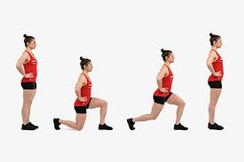
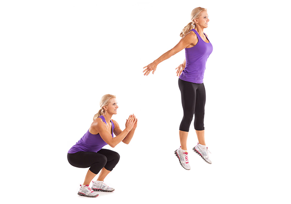

Squat cơ bản (Bodyweight squat)
-800x450.jpg)
1: Đứng đúng tư thế
Đứng thẳng, hai chân mở rộng bằng vai hoặc rộng hơn một chút.
Mũi chân hơi hướng ra ngoài khoảng 30 độ.
Siết cơ bụng để giữ cân bằng.
2: Vị trí tay
Tay có thể để trước ngực, chống hông, hoặc duỗi thẳng tay ra trước để cân bằng.
3: Hạ người xuống
Đẩy hông ra sau khi bạn chuẩn bị ngồi xuống.
Gập gối và hạ thấp cơ thể, giữ lưng thẳng, ngực mở và mắt nhìn thẳng.
Hạ đến khi người song song với mặt sàn (hoặc thấp hơn nếu linh hoạt).
Đảm bảo đầu gối không vượt quá mũi chân.
4: Đứng lên
Dùng lực từ gót chân để đẩy cơ thể trở lại tư thế đứng thẳng.
Siết chặt cơ mông khi đứng lên.
5: Hít thở
Hít vào khi hạ xuống và thở ra khi đứng lên.
Forward Lunges

1: Tư thế chuẩn bị
Hai chân mở rộng bằng hông.
Tay đặt trên hông hoặc giữ trước ngực để giữ thăng bằng.
Siết chặt cơ bụng để ổn định cơ thể.
2: Bước chân tới trước
Bước một chân lên phía trước khoảng 60-90 cm (tùy chiều cao).
Gót chân trước chạm sàn trước, rồi đến cả bàn chân.
3: Hạ người xuống.
Gập cả hai đầu gối, hạ thấp cơ thể cho đến khi gối sau gần chạm sàn (không chạm hẳn).
Đùi của chân trước gần song song với mặt sàn, gối trước không vượt quá mũi chân.
4: Đẩy người trở lại
Dồn lực vào gót chân trước để đẩy cơ thể trở lại tư thế đứng thẳng.
Lặp lại với chân kia
5: Hít thở
Hít vào khi thả xuống, thở ra khi đẩy lên.
Jump Squat

1: Tư thế chuẩn bị
Đặt hai chân rộng bằng vai hoặc hơn một chút.
Mỗi chân hơi hướng ra ngoài.
Tay thả lỏng hoặc để trước ngực để cân bằng.
Lưng giữ thẳng, ngực mở, mắt nhìn về phía trước.
Siết cơ bụng để ổn định cơ thể.
2: Thực hiện jump squat
Gập gối, hạ người tư thế squat (đẩy mông ra sau, giữ đùi song song mặt sàn).
Không để đầu gối vượt quá mũi chân.
3: Bật nhảy
Dồn lực từ dưới gót chân, bật nhảy lên cao nhất có thể.
Tay có thể đưa ra sau để tăng lực nhảy hoặc giữ trước ngực để ổn định.
4: Tiếp đất
Tiếp đất nhẹ nhàng bằng mũi chân, sau đó hạ xuống cả bàn chân.
Trở về tư thế squat ngay lập tức để chuẩn bị lặp lại động tác.
5: Hít thở
Hít vào khi hạ người xuống, thở ra mạnh khi bật nhảy.